Camera-only cross-view localisation with the Sat-RoMa matcher: what we built and where it stands
One ground panorama in, a metric position on the satellite tile out. This page collects the VIGOR benchmark campaign (24 Sep – 1 Oct): the method we settled on, now named PanoRoMa, how it differs from FG² and Loc², every result on identical sample draws, the 100-epoch training and regularisation runs, what did not work, and the decisions still open.
Corrected labels: re-scored, then retrained
Same 12,739 Chicago same-area test panoramas throughout. SliceMatch (Lentsch et al., TU Delft, CVPR 2023) found that VIGOR's labels were computed with a wrong ground resolution and published splits__corrected; FG²'s README tells users to train and test on them. On 2 Oct I re-scored the existing models on them without retraining; on 3–4 Oct I retrained PanoRoMa D on them (100 epochs per pass, otherwise the same recipe) and scored it on the same list.
| Method | Original labels: median | Corrected labels: median (95 % CI) | Mean | ≤ 5 m | > 5 m |
|---|---|---|---|---|---|
| FG² (trained on corrected labels) | 1.05 m | 0.98 m (0.96–0.99) | 1.84 m | 94.7 % | 5.3 % |
| PanoRoMa D, retrained on corrected labels | — | 1.07 m (1.06–1.09) | 2.40 m | 92.1 % | 7.9 % |
| … with per-city offset correction (fitted on held-out training frames) | — | 1.01 m (1.00–1.03) | 2.35 m | 92.1 % | 7.9 % |
| PanoRoMa D, trained on original labels | 1.12 m | 1.19 m (1.17–1.21) | 2.53 m | 91.8 % | 8.2 % |
| Loc² (corrected depth) | 1.26 m | 1.21 m (1.19–1.23) | 3.03 m | 88.0 % | 12.0 % |
| PanoRoMa D retrained, first pass only | — | 1.42 m (1.40–1.45) | 2.72 m | 91.1 % | 8.9 % |
- The correction is small and radial. Every label moves outward from the tile centre by about 3 % of its distance: median shift 0.45 m, at most 0.80 m. The share of frames within 5 m and 10 m stays the same for every method; only the median moves.
- The re-score changed only the yardstick. Predictions were identical frame by frame. FG² gained 0.07 m because it was trained on the corrected labels; PanoRoMa lost 0.07 m because it had learned the old ones (positions about 3 % too close to the tile centre).
- The retrain recovers that and a bit more: 1.19 → 1.07 m median, 2.53 → 2.40 m mean. The tail barely moves (7.9 % of frames over 5 m, against 8.2 % before and 5.3 % for FG²). The gap to FG² is now 0.09 m on the median and 0.56 m on the mean; PanoRoMa stays clearly ahead of Loc². Of the frames each method misses by more than 5 m, 3.6 % are missed by both, 4.3 % only by PanoRoMa and 1.7 % only by FG².
- The 0.4 m north offset is still there (+0.42 m north). It is not a label effect. Models trained without rot90/flip augmentation sit within 0.2 m of the labels in every city; models trained with it sit 0.25–0.58 m north in all four cities. Rotating map and panorama together averages away a fixed vector between VIGOR's label and the position the imagery implies, so the model learns the imagery position and misses the label by that vector. A per-city correction measured on 4,000 held-out training frames (no test frames in the fit) and subtracted from the test predictions takes the median from 1.07 to 1.01 m (CI 1.00–1.03) and the mean from 2.40 to 2.35 m; the recall does not move. The offsets are +0.37 m north in Chicago, +0.46 New York, +0.24 San Francisco and +0.34 Seattle. FG² is at 0.98 m (0.96–0.99), so the median gap is now 0.03 m; the tail (7.9 % of frames over 5 m against 5.3 %) is untouched.
Sources: experiments/17_corrected_labels/ (re-score, OFFSET.md) and experiments/18_panoroma_corrected_labels/ (retrain, RESULTS.md); Eagle jobs 8890915/19/20 and 8891319 → 8891320 → 8891362. Corrected labels: github.com/tudelft-iv/SliceMatch, VIGOR_corrected_labels. The reader now refuses VIGOR's original labels.
Corrected results and where the methods fail
These are the results on corrected depth, on the whole VIGOR same-area test list of Chicago: 12,739 panoramas, no sampling, known orientation. The settings were fixed before this run. PanoRoMa D is the regularised model with both decoders trained for 100 epochs.
| Method | Median (95 % CI) | Mean | ≤ 5 m | ≤ 10 m |
|---|---|---|---|---|
| FG² | 1.05 m (1.04–1.06) | 1.87 m | 95 % | 97 % |
| PanoRoMa D, two-pass | 1.12 m (1.10–1.13) | 2.44 m | 92 % | 95 % |
| Loc² (corrected depth) | 1.26 m (1.23–1.28) | 3.01 m | 88 % | 93 % |
| PanoRoMa D, first pass only | 1.37 m (1.35–1.39) | 2.66 m | 91 % | 95 % |
PanoRoMa is 0.07 m behind FG² on the median and ahead of Loc² on every measure. The distance to FG² is in the tail: 8.1 % of our frames are off by more than 5 m against 5.3 % for FG². On Poznań street imagery, zero-shot, PanoRoMa D reaches 3.40 m (FG² 4.15 m, Loc² 3.30 m).
Which frames each method gets wrong
- Most failures are shared. When FG² fails, PanoRoMa also fails 69 % of the time; when PanoRoMa fails, FG² fails 45 %. Both off by more than 10 m on 1.8 % of frames.
- FG² right, PanoRoMa wrong by more than 5 m: 329 frames (2.6 %) that FG² gets within 2 m. Most of the gap in the mean error is here.
- PanoRoMa right, FG² wrong: 83 frames (0.7 %) that PanoRoMa gets within 2 m.
Each figure: the panorama (brightened) with PanoRoMa's depth-placed tokens (filled = RANSAC inlier), and the satellite tile with the true position (green +), PanoRoMa's final answer (red ×) and FG²'s answer (blue ▲). Both methods were re-run on these frames and reproduce the full-split errors exactly. The readings are my own interpretation after looking at each figure.
FG² fails, PanoRoMa works
FG² slides along a repetitive straight structure (expressway lanes, a street under leaning towers) or flips to the far side of a roughly symmetric scene. PanoRoMa keeps the position because the tokens placed next to the camera (barriers, lane marks, kerbs) carry the detail.
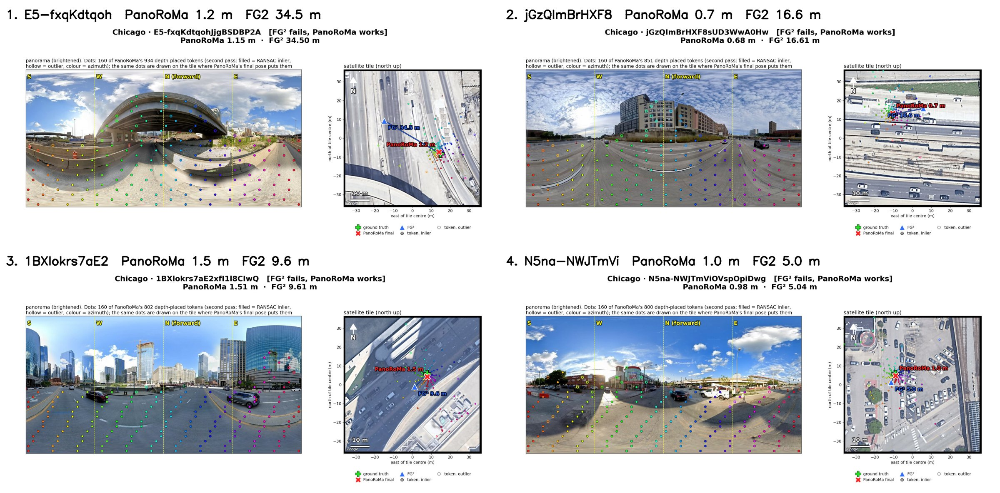
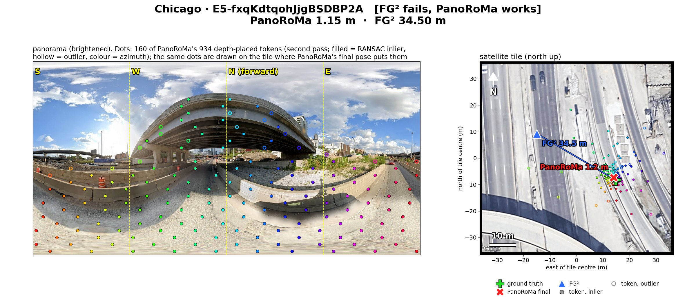
1 · Under a highway overpass. PanoRoMa 1.15 m, FG² 34.5 m. The tile shows the deck, not the ground below. FG² jumps to the far side of the expressway, almost point-mirrored through the tile centre." loading="lazy">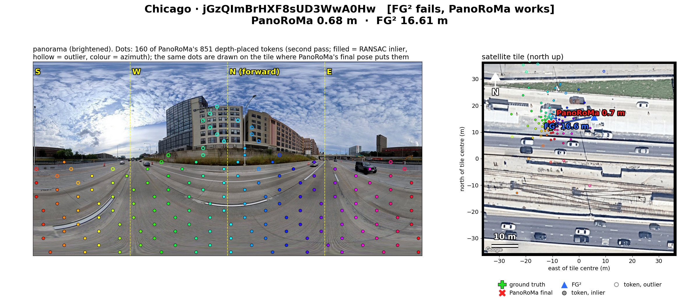
2 · Multi-lane expressway. PanoRoMa 0.68 m, FG² 16.6 m. FG² slides 16 m along the road; PanoRoMa's tokens near the camera (lane marks, shoulder) pin the position." loading="lazy">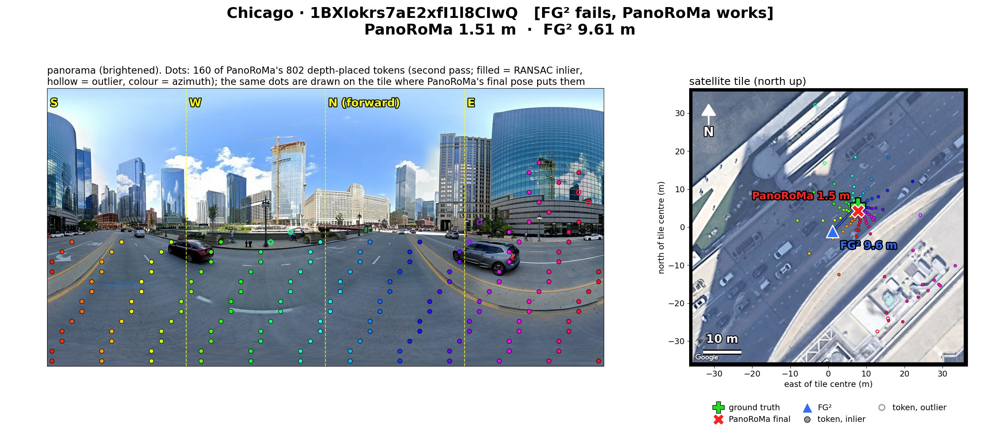
3 · Wacker Drive between glass towers. PanoRoMa 1.51 m, FG² 9.6 m. The tile is off-nadir (towers lean across the road); FG² slides about 9 m along the street." loading="lazy">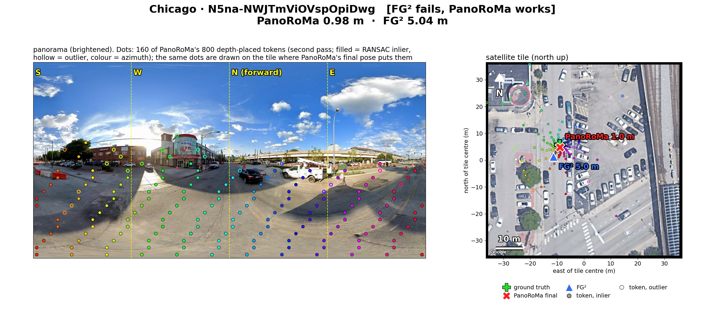
4 · Parking lot. PanoRoMa 0.98 m, FG² 5.04 m. Only just over the 5 m line; the parked cars differ from the tile. Borderline." loading="lazy">PanoRoMa fails, FG² works
In three of four frames the ground near the camera is hidden on the tile or looks the same elsewhere: tree canopy, bridge trusses, a street under leaning roofs. PanoRoMa then locks onto a similar-looking spot, already in the first pass. The bridge frame shows a weakness specific to our method: overhead structure is placed by depth as if it were on the ground.
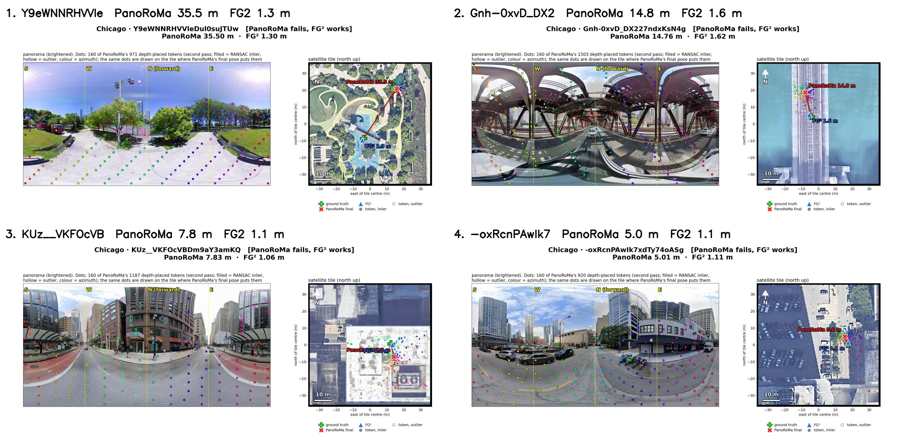
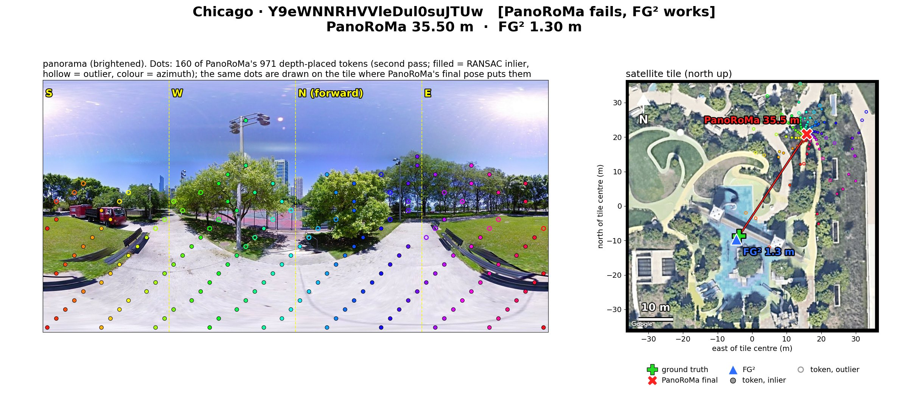
1 · Park under tree canopy. PanoRoMa 35.5 m, FG² 1.30 m. The canopy hides most paths on the tile; the ground tokens see paved path and lawn that repeat. PanoRoMa locks onto another junction 35 m away, already in the first pass." loading="lazy">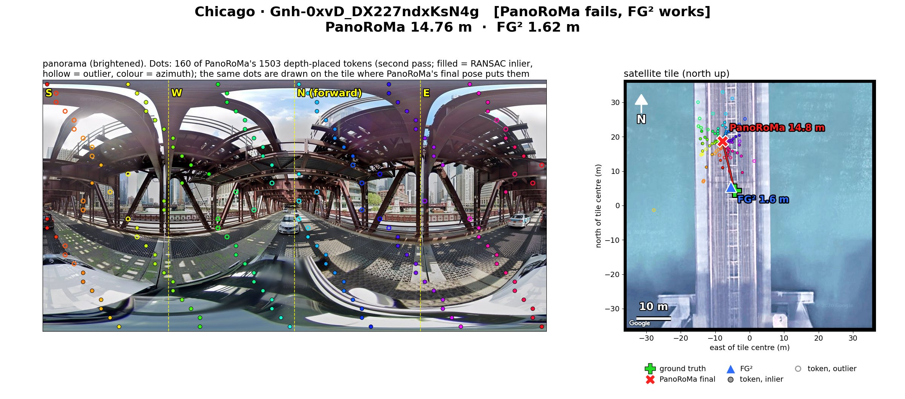
2 · Steel truss bridge deck. PanoRoMa 14.8 m, FG² 1.62 m. Overhead trusses fill the view and are placed by depth as if they lay on the ground; the bridge looks the same along its axis. A PanoRoMa-specific weakness." loading="lazy">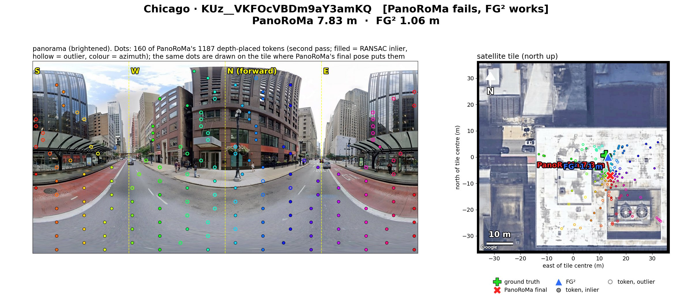
3 · Street canyon under leaning roofs. PanoRoMa 7.83 m, FG² 1.06 m. The street is hidden under a roof on the off-nadir tile; PanoRoMa slides 8 m along it." loading="lazy">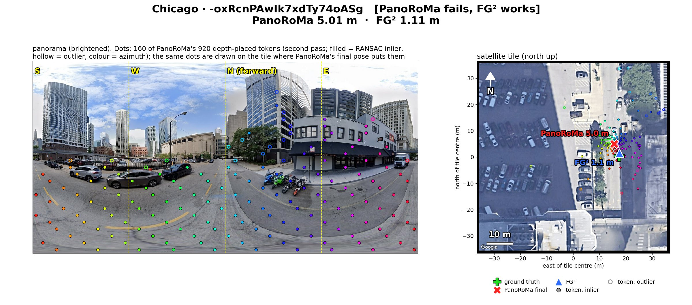
4 · Plain street by a parking lot. PanoRoMa 5.01 m, FG² 1.11 m. On the threshold; nothing fixes the position along the street. Borderline." loading="lazy">Both fail
In five of six frames the two methods, which work very differently, put the camera within 1–4 m of each other and 10–40 m from the label. In three the panorama clearly contradicts the label (a roof, a bridge deck seen from a boat, a raised plaza above the riverwalk). So a good part of the 3.6 % of frames where both fail is probably label or GPS error in VIGOR, not method error. That is my reading of six frames, not a measured rate.
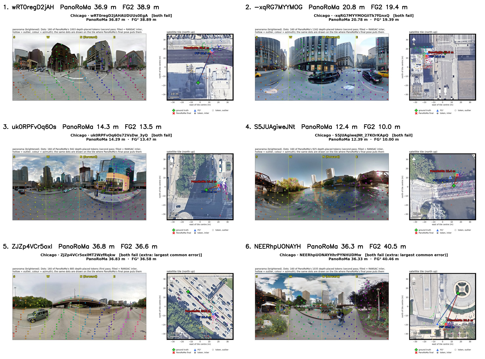
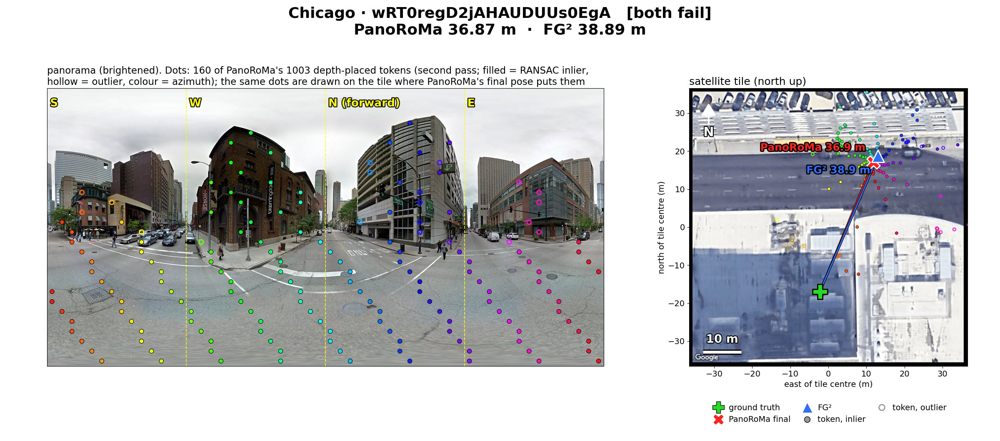
1 · Label looks wrong. PanoRoMa 36.9 m, FG² 38.9 m. The panorama is at an intersection, but the true position sits on a roof 35 m from the only street in the tile. Both methods agree within 2 m on that street." loading="lazy">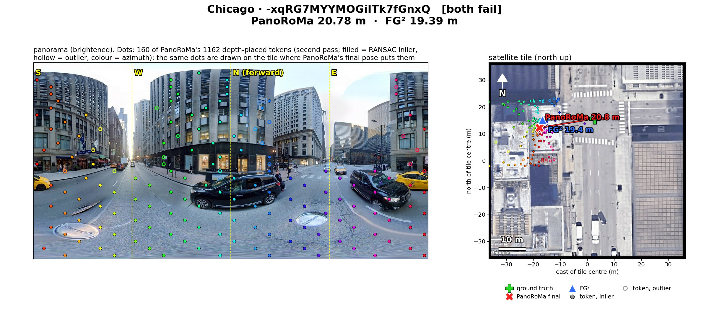
2 · Street canyon. PanoRoMa 20.8 m, FG² 19.4 m. Both predict the same point 20 m west; canyons repeat and the lean of the buildings hides the street. Could also be a label offset. Unclear." loading="lazy">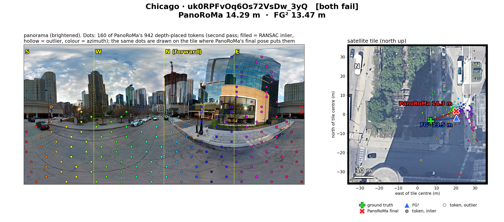
3 · Corner by a glass tower. PanoRoMa 14.3 m, FG² 13.5 m. The true position is in deep shadow under canopy; both agree on the open road 13 m east. Unclear." loading="lazy">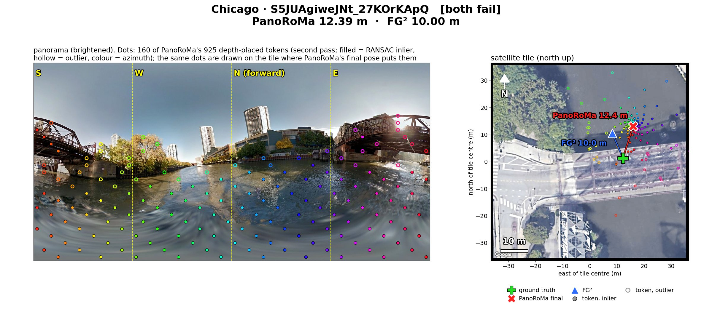
4 · Photographed from a boat. PanoRoMa 12.4 m, FG² 10.0 m. The panorama is on the river, the label is on the bridge deck; both predict open water, which fits the panorama better. Label error, most likely." loading="lazy">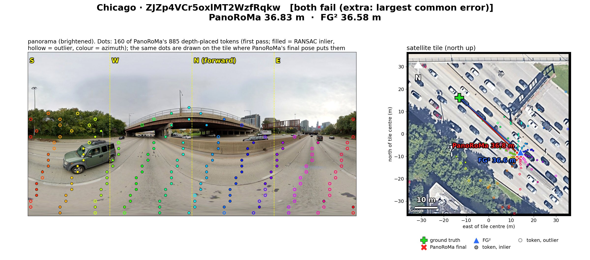
5 · Expressway with an overpass. PanoRoMa 36.8 m, FG² 36.6 m. Both land on the same spot 37 m along the highway (PanoRoMa's second pass was gated off). A real cue (sign gantry) or a label offset. Unclear." loading="lazy">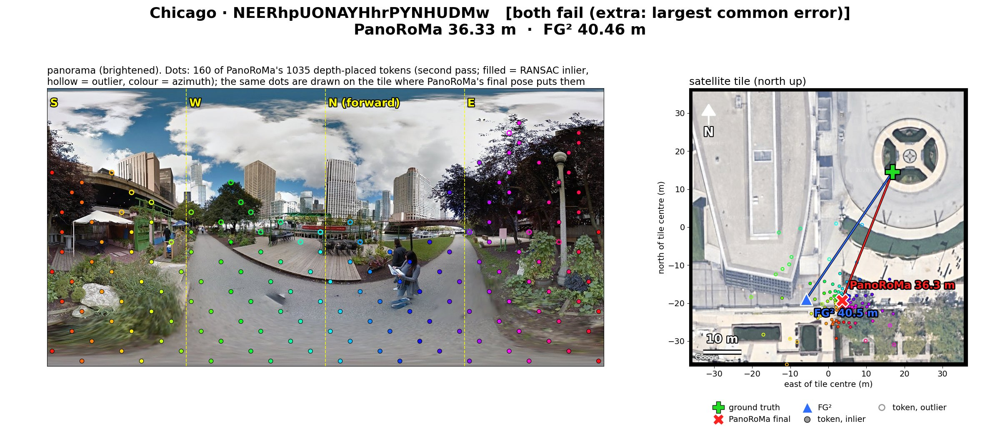
6 · Riverwalk below a plaza. PanoRoMa 36.3 m, FG² 40.5 m. The label is on a raised plaza at street level; the panorama was taken on the lower riverwalk, which is where both put the camera. Most likely a label error." loading="lazy">Headline
Median position error by split
Lower is better. Same sample draws for all three methods; FG² and Loc² from their released checkpoints. All-cities FG² value is the published one.
On the Chicago median PanoRoMa now matches FG²: 1.05 m (95 % CI 1.02–1.09) against 1.06 m, with both decoders trained for 100 epochs. On all cities and cross-area the rows are still from the earlier, shorter training (level with Loc², 0.4–0.5 m behind FG²) and are being redone. Since the last version of this page two things moved the tail: training ten times longer on four H100s with the float16 bug fixed, and augmentation, which removed the overfitting (section 5). The Chicago mean fell from 3.33 m to 2.67 m, below Loc²'s 2.93 m, and Poznań zero-shot from 4.53 m to 4.01 m, level with FG². FG² is still clearly ahead on the tail (mean 1.86 m, 3 % of frames over 10 m against our 6 %). The all-cities and cross-area rows are from the earlier, shorter training and will be redone with the new decoders.
0 · Where it started: Poznań streets
The project's real setting is a car with one 360° camera on Poznań streets, matched against the city's public orthophotos (2024 and 2025). The method of record there is the flat-ground picture: every cell of a 56 m grid around the car takes its colour from the panorama pixel that sees that point of the road, the frozen satellite encoder reads that picture like an overhead image, and the Sat-RoMa decoder matches it to a 224 m orthophoto crop. VIGOR was taken up to find out why this plateaus and to compare with FG² and Loc² on their own benchmark.

| Poznań, 400 entries of a held-out route, noisy heading | Median (95 % CI) | ≤ 5 m | ≤ 10 m | > 30 m | Heading |
|---|---|---|---|---|---|
| Loc², UniK3D depth, VIGOR weights (zero-shot) | 3.50 m (3.26–3.77) | 68 % | 85 % | 3 % | 2.0° |
| Loc², flat-ground depth guess (zero-shot) | 3.91 m (3.47–4.25) | 62 % | 83 % | 3 % | 2.3° |
| FG², VIGOR weights (zero-shot) | 4.15 m (3.82–4.56) | 58 % | 86 % | 0 % | 2.4° |
| PanoRoMa regularised (D, 30 epochs), 71 m map (zero-shot) | 4.01 m (3.65–4.62) | 60 % | 82 % | 3 % | 4.5° |
| PanoRoMa, 100 epochs, 71 m map (zero-shot) | 4.37 m (3.86–4.90) | 55 % | 77 % | 4 % | 4.3° |
| PanoRoMa, 100 epochs coarse + 100-epoch second pass (zero-shot) | 4.55 m (3.83–5.10) | 54 % | 77 % | 5 % | 4.8° |
| PanoRoMa, earlier training, 71 m map (zero-shot) | 4.53 m (3.88–5.12) | 54 % | 76 % | 3 % | 4.2° |
| PanoRoMa two-pass, full 112 m map (zero-shot) | 4.75 m (4.03–5.39) | 53 % | 76 % | 4 % | 4.4° |
| IPM + Sat-RoMa, trained on Poznań and tuned on this route | 5.69 m (4.94–6.54) | 45 % | 71 % | 5 % | 2.6° |
| Lift-Splat, our earlier learned BEV (superseded) | 12.5 m | 17 % | 43 % | 11 % | 7.2° |
Every method gets the same 400 entries, the same ±22 m position prior, and a panorama turned by the noisy (±10°) prior heading, so each has to recover the rest itself. Giving FG² and Loc² the true heading instead, as the first Poznań rows did, changes them by less than 0.2 m. Ground truth is Mapillary's GPS and compass, so differences of a few metres are within its uncertainty. Source: experiments/12_poznan_three_way/ (REPORT.md, FINDINGS.md).
What the Poznań run shows
PanoRoMa transfers: without any Poznań training it is better than our Poznań-trained flat-ground method, with fewer large misses. With augmentation it reaches 4.01 m, level with FG² and 0.5 m behind Loc² with the same depth maps; its heading error is still about twice Loc²'s. A VIGOR-sized 71 m map helps a little. The new 100-epoch second-pass decoder helps on VIGOR but not on Poznań (4.55 m against 4.37 m with the earlier one): it has specialised to VIGOR, which regularisation should address. A pose solver that also estimates scale gives the same 4.53 m, so the solver is not the cause.
Depth scale, checked before changing it
UniK3D depths imply a camera height of 1.21 m on VIGOR and 1.04 m on Poznań by the same rule, while the Poznań rig is about 1.65 m. UniK3D under-scales on both, and PanoRoMa was trained with that bias, so the consistent Poznań correction would be ×1.16, not ×1.6. The mismatch is about 14 %; no rescale is applied.
Training budget is not like for like: PanoRoMa saw about 6 passes over VIGOR at batch 4, FG² 25 passes at batch 24, and Loc²'s code runs up to 100 passes at batch 80. A 100-pass PanoRoMa run is being prepared.

1 · Results against the state of the art
FG² and Loc² were run from their released checkpoints at their native input sizes on exactly our draws (a pure-PyTorch shim replaces mmcv for FG²; Loc² uses the same UniK3D depth maps we use). Both reproduce their papers within 0.1 m.
| Split · draw | Method | Median (95 % CI) | Mean | ≤ 5 m | ≤ 10 m |
|---|---|---|---|---|---|
| Same-area · Chicago 3000 | FG² (released) | 1.06 (1.02–1.10) | 1.86 | 95 % | 97 % |
| Loc² (released) | 1.33 (1.29–1.37) | 2.93 | 88 % | 93 % | |
| PanoRoMa, 100 epochs, coarse + 100-epoch second pass | 1.05 (1.02–1.09) | 2.67 | 89 % | 93 % | |
| PanoRoMa, regularised (D, 30 epochs) + earlier second pass | 1.22 (1.18–1.27) | 2.69 | 88 % | 94 % | |
| PanoRoMa, 100 epochs + earlier second pass | 1.22 (1.17–1.27) | 2.89 | 87 % | 93 % | |
| PanoRoMa, 100 epochs, coarse pass only | 1.37 (1.33–1.41) | 2.91 | 89 % | 93 % | |
| Earlier two-pass (60k steps, float16) | 1.24 (1.19–1.29) | 3.33 | 85 % | 91 % | |
| Earlier coarse pass only | 1.77 (1.70–1.82) | 3.68 | 84 % | 91 % | |
| Ours, flat-ground picture query (earlier method of record) | 1.71 (1.64–1.79) | 4.55 | 78 % | 86 % | |
| Same-area · all cities 12000 | FG² (published) | 1.08 | 1.95 | — | — |
| Loc² (released, our draw) | 1.59 | 3.06 | — | — | |
| Ours, two-pass (earlier training; 100-epoch row running) | 1.51 (1.48–1.54) | 3.33 | 85 % | 92 % | |
| Cross-area · SF + Chicago 6000 | FG² (released) | 1.41 | — | — | — |
| Loc² (released) | 1.99 | — | — | — | |
| Ours, two-pass (trained on New York + Seattle) | 1.94 (1.88–1.98) | 3.82 | 84 % | 91 % |
Per city, ours, two-pass, all-cities draw
| City | n | Coarse median | After fine pass | Mean | ≤ 5 m |
|---|---|---|---|---|---|
| San Francisco | 3198 | 1.79 | 1.20 | 2.56 | 90 % |
| Chicago | 2944 | 1.79 | 1.25 | 3.32 | 85 % |
| Seattle | 2718 | 1.83 | 1.35 | 2.64 | 90 % |
| New York | 3140 | 3.11 | 2.95 | 4.72 | 74 % |
What the second pass buys, per city
Median error of the coarse pass (hollow) and after the fine pass (filled), four-city model, all-cities draw.
New York is the weak city for every model we trained: tall facades smear into the query and the street grid repeats. There the fine pass gains only 0.16 m, because its misses are already wrong in the coarse pass.
2 · Architecture of the method
The matcher is our Sat-RoMa decoder. Instead of scoring a cosine similarity between features, it predicts, for every query token, a probability over all reference cells; the matches come out as a small set of modes per token and are resolved by multi-hypothesis RANSAC. The query uses Loc²'s geometry: panorama tokens placed on the ground by a monocular metric depth estimate.
- Encode both views with one frozen satellite-trained encoder. DINOv3
sat493m(303 M parameters) sees the panorama and the satellite tile. It is never trained, so the whole trainable budget is the decoder and a light head. - Place panorama tokens on the ground by depth. Each of the 56 × 28 panorama tokens gets a metric ground position from UniK3D depth along its viewing ray (Loc²'s geometry), and passes through a 2.2 M-parameter projection head. The head is necessary: without it the median is 4.3 m.
- Match with the Sat-RoMa decoder. For each placed token the decoder outputs a probability over the 56 × 56 reference cells (2 m each) plus a certainty. Training combines RoMa's coarse cross-entropy with Loc²'s pose loss (VCE, closed-form Procrustes) and a heat-map pose loss.
- Solve the pose robustly. Each token's distribution is reduced to its modes; RANSAC with a 3-DoF rigid model (se2) fits the pose over all token-mode pairs.
- Refine with a second pass. A 56 m window around the coarse pose is re-rendered at 0.0625 m/px and matched by a second decoder trained on jittered windows (1 m cells). This takes Chicago from 1.77 m to 1.24 m.
- Report a calibrated confidence. 19 statistics of the vote maps (mass near the pose, entropy, inlier ratio, …) feed a logistic model for P(error < 5 m). At 90 % coverage it cuts gross misses from 9.1 % to 4.7 % on Chicago.
3 · What differs from FG² and Loc²
| Aspect | FG² | Loc² | Ours |
|---|---|---|---|
| Where the ground view is matched | Ground features lifted to 3D points and matched to aerial features | Image-plane tokens placed on the ground by metric depth | Same as Loc² (depth-placed panorama tokens) |
| Matcher | Learned feature similarity with deformable attention | Cosine similarity between projected features | Sat-RoMa decoder: a classifier over all reference cells per token, with a certainty |
| Hypotheses per token | One | One (soft correspondences) | Several modes, resolved by RANSAC over all of them |
| Encoder | Trained feature extractor feeding the 3D lifting | Foundation-model features + a light trained projection head (§3.1) | Frozen DINOv3 satellite model for both views; only decoder + 2.2 M head trained |
| Resolution strategy | Single pass | Single pass | Two passes: 2 m cells on 112 m, then 1 m cells on a 56 m window |
| Confidence output | None calibrated | Inlier count only | Calibrated P(error < 5 m) from vote-map statistics |
| Pose loss | Pose-supervised Procrustes | VCE (virtual-point) pose loss | Loc²'s VCE + RoMa's cross-entropy + heat-map pose loss |
The reason for taking Loc²'s geometry: our own flat-ground (IPM) picture query plateaued at 2.9 m with 4 m cells no matter how much data we added, and Loc²'s ablation (Tab. 12) reports the same thing: matching a bird's-eye picture gives 8.2 m, matching depth-placed image tokens 1.75 m. The contribution we test is the matcher, not the geometry.
4 · How we got here
Chicago same-area median, 3000-sample draw, in the order the steps were taken. Each change is the only difference from the row above unless stated.
Chicago error, step by step
Median and mean position error after each change. FG² (1.06 m) and Loc² (1.33 m) medians on the same draw for reference.
| Step | Median | Mean | What changed |
|---|---|---|---|
| Zero-shot (Poznań-trained picture model) | 5.59 | 10.07 | No VIGOR training |
| Fine-tune on Chicago, 3k steps | 3.61 | 6.35 | Decoder fine-tuned on VIGOR |
| 30k steps | 2.90 | 5.45 | Longer training; plateau (warm start, solver made no difference) |
| Four cities, 60k steps | 2.51 | 4.95 | FG²'s training data |
| 2 m cells instead of 4 m | 1.89 | 5.19 | 0.125 m/px so the tile fills the reference canvas: largest single gain |
| Depth-placed panorama tokens (Task 04) | 1.76 | 4.16 | Loc² geometry + our decoder, Chicago only; lighter tail |
| Task 04, four cities | 1.77 | 3.68 | Same median, mean −0.5 m |
| Second pass (Chicago fine decoder) | 1.19 | 3.24 | 1 m cells on a 56 m window around the coarse pose |
| Second pass, four-city fine decoder | 1.24 | 3.33 | One model for all cities |
| 100 epochs on 4× H100, bf16 decoder | 1.22 | 2.89 | 10× the training, float16 gradient bug fixed; coarse pass 1.77 → 1.37 m |
| Regularisation D (30 epochs) | 1.22 | 2.69 | Augmentation + label smoothing + weight decay: the tail drops below Loc² |
| 100-epoch second pass | 1.05 | 2.67 | Second decoder also trained 100 epochs in bf16: level with FG² on the median |
5 · Training at scale and regularisation
The earlier PanoRoMa decoder saw about 6 passes over VIGOR at batch 4; FG² trains 25 and Loc²'s code up to 100. We retrained it for 100 passes on one full Eagle node and found and fixed two problems on the way.
4× H100, 11.8× faster
The frozen encoder took 88 % of every step. With 4 GPUs, TF32, the encoder in bf16 and compiled, one node trains at 92 samples/s against 7.8 on one GPU before, with accuracy unchanged on 200 held-out frames. 100 passes take about 13 h instead of 6 days. This is now the default training job (make eagle-train).
A float16 bug in every earlier run
The Sat-RoMa decoder trained in float16 with no loss scaling, so small gradients rounded to zero: the step-1 gradient was 53 % away from a float32 reference. Switching the decoder to bf16 brings it to 0.7 % at the same speed. Old checkpoints evaluate the same either way, so earlier results stand.
100 epochs: overfitting, but localisation still improves
| Epoch | Train top-1 | Val top-1 | Val cross-entropy | VIGOR coarse median / mean | Poznań two-pass |
|---|---|---|---|---|---|
| earlier (60k steps) | — | 12.0 % | — | 1.77 / 3.68 m | 4.53 m |
| 10 | 18.4 % | 14.1 % | 3.43 | 1.57 / 3.37 m | 5.13 m |
| 40 | 41.0 % | 16.5 % | 4.16 | 1.54 / 3.35 m | 4.50 m |
| 80 | 51.2 % | 18.0 % | 5.07 | 1.43 / 3.08 m | 4.45 m |
| 100 | 54.5 % | 19.9 % | 5.40 | 1.37 / 2.91 m | 4.37 m |
Training accuracy runs far ahead of validation and validation cross-entropy rises from epoch 15: the model memorises training tiles and grows over-confident on frames it gets wrong. The pose it picks keeps improving anyway, because RANSAC uses where each token's probability peaks, not how sharp it is.
Regularisation ablation, 30 epochs each, against the same run at epoch 30
| Run | Train / val top-1 | Val pose | VIGOR coarse median / mean | VIGOR two-pass mean | Poznań two-pass | Poznań ≤ 10 m |
|---|---|---|---|---|---|---|
| Baseline (epoch 30) | 33.9 / 16.5 % | 3.40 m | 1.50 / 3.19 m | 3.06 m | 4.59 m | 74 % |
| A: label smoothing 0.1 | 33.1 / 16.2 % | 3.35 m | 1.48 / 3.18 m | 3.02 m | 4.26 m | 76 % |
| B: colour jitter + quarter turns ±10° + mirror | 18.6 / 16.5 % | 2.82 m | 1.52 / 2.96 m | 2.83 m | 4.33 m | 78 % |
| C: weight decay (decoder 0.3, head 0.05) | 32.8 / 15.7 % | 3.30 m | 1.54 / 3.32 m | 3.17 m | 4.51 m | 78 % |
| D: A + B + C | 18.2 / 16.7 % | 2.79 m | 1.46 / 2.78 m | 2.69 m | 4.01 m | 82 % |
Augmentation is what closes the train–validation gap (18 % against 17 %); smoothing and weight decay alone barely change it. Combined (D), every localisation number improves, most of all the tail and Poznań. D is now training for 100 epochs, followed by a regularised second-pass decoder. Augmentation keeps the label correct for every transform (tested with planted poses and checked visually on real tiles). Source: experiments/13_panoroma_long/, experiments/14_regularisation/.
6 · Tried and rejected
Each was run to completion on the same draws; none moved the median by more than its interval.
| Idea | Result | Verdict |
|---|---|---|
| Warm start from Poznań | 2.90 m with or without | null |
| Solver choice (homography / 4-DoF / 3-DoF) | 2.90 / 2.91 / 2.95 m | null |
| Sat-RoMa's conv refiner, frozen | +0.1 m on the picture, harmful on panorama tokens | null |
| Conv refiner, trained | 1.74 → 1.72 m | marginal |
| Denser query tokens (112 × 56) | 1.91 m vs 1.76 m | worse |
| LoFTR as the fine pass | 7.6 m (2.2 m gated) | worse |
| No projection head | 4.3 m | worse |
| Re-tuning the consensus (threshold, modes, solver) for our grids | Defaults already on the plateau, all three passes | null |
| Trained pose-correctness head (87 K params) | AUROC 0.919 vs logistic 0.918 | null |
7 · Confidence that means something
Gross misses left when the least confident frames are dropped
Share of kept frames with error > 10 m, as frames are kept in order of confidence. Chicago 3000 draw, four-city matcher. The oracle keeps frames in order of their true error.
What works
A logistic model on 19 vote-map statistics, fitted on 7000 held-out training frames. Chicago: AUROC 0.918 for error < 5 m. Dropping the 10 % least confident frames lowers the share of misses over 10 m from 9.1 % to 4.7 %, and dropping 20 % lowers it to 2.4 %. The strongest single signal is how much of the "ego" vote map piles up within 2 cells of the chosen pose (AUROC 0.918 alone).
What it cannot do
Three trained heads that see the vote maps, the per-token evidence or the statistics all land on the logistic's ranking. The remaining misses look exactly like correct frames: many tokens agree sharply on a wrong but plausible place. Separating them needs evidence the matcher does not produce, such as a second map year, a route prior or a finer verification pass. Across all cities AUROC is 0.874; New York alone is 0.76.
8 · Choices we made
- Benchmark protocol: FG²'s 80/20 train/validation split; the last checkpoint is used (the validation proxy picked worse ones); every baseline is rerun on our draws rather than quoted.
- Grid: 0.125 m/px, 2 m cells, 112 m canvas for VIGOR; the Poznań/Durham pipeline keeps 0.25 m/px until re-checked there.
- Query: Loc²-style depth-placed panorama tokens with a trained projection head for VIGOR; the flat-ground picture stays as the camera-only baseline row.
- Solver and consensus: 3-DoF (se2) RANSAC with Sat-RoMa's default mode extraction; a sweep confirmed the defaults.
- Refinement: a second decoder pass on a finer window, not a sub-cell regression head.
- Confidence: the calibrated logistic is the confidence of record; the small token-stream head is kept as the trained alternative for the particle filter.
- Training: one full 4× H100 node per run, TF32, bf16 encoder and decoder, compiled encoder, total batch 32; regularisation D (augmentation, label smoothing, weight decay) for the next runs.
- Licences: FG² (GPL-3.0) and Loc² (AGPL-3.0) are wrapped from
third_party/, never copied into our code.
9 · Open work
| Item | State | Next step |
|---|---|---|
| PanoRoMa D, 100 epochs + regularised second pass | running | Coarse at epoch ~80; second pass follows (~14 h). Then all three VIGOR splits and Poznań against FG² and Loc². |
| All-cities row with both 100-epoch decoders | running | 12000-sample evaluation, job 8878169 |
| Fine-tune PanoRoMa on Poznań | next | The remaining 0.5 m gap to Loc² on Poznań; zero-shot is now level with FG² |
| PanoRoMa-F: FG²'s lifting as the query | spec to write | Same decoder and second pass; removes the need for a depth network |
| Multi-year reference maps (Esri Wayback, Task 05) | decision needed | The 2021 Esri imagery in Chicago, San Francisco and Seattle is off-nadir 0.5 m satellite imagery; it cannot be aligned to the VIGOR tiles better than about 1 m. New York (aerial orthophotos) aligns at +0.48 m east with 0.18 m residual. Recommended: run the map-age study in New York first. |
| Ablation 9b: cosine similarity instead of the decoder, same geometry | planned | Isolates how much of the gain over Loc² is the decoder itself |
| Unknown-orientation setting | planned | FG² and Loc² both report it; we only have known orientation |
| Whole-tile half-pixel paste offset | known issue | Up to 6 cm label bias at odd canvas gaps (San Francisco at 0.125 m); fixing it moves every coarse number slightly |
Merge to main | open | All of the above lives on task03/eval-density-solver-pf; main still shows the old Lift-Splat results |
Sources: experiments/10_loc2_matcher/REPORT.md, experiments/09_vigor/REPORT.md + IDEAS.md, docs/decisions.md, docs/tasks/04_loc2_matcher.md, 05_reference_years.md, 06_certainty.md.